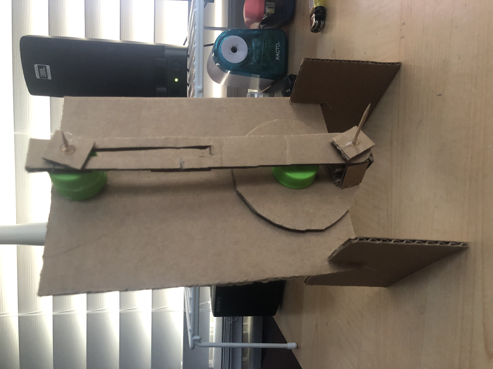
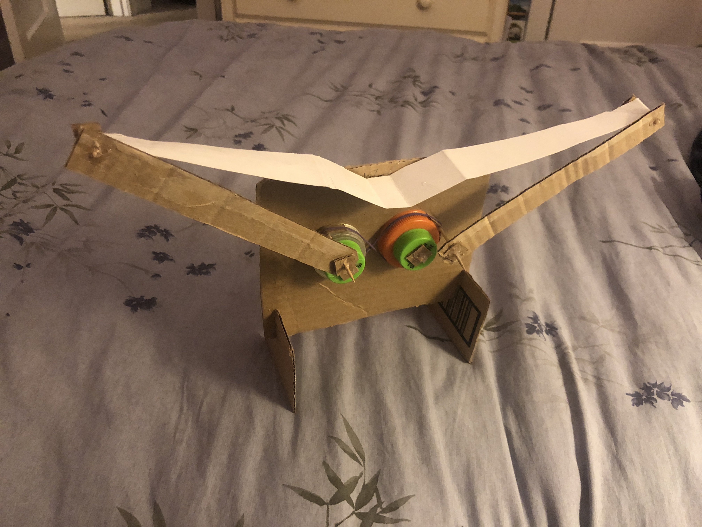
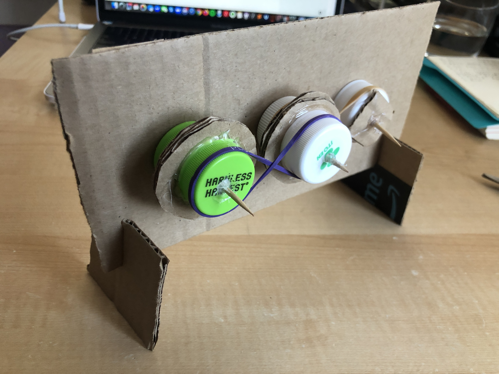
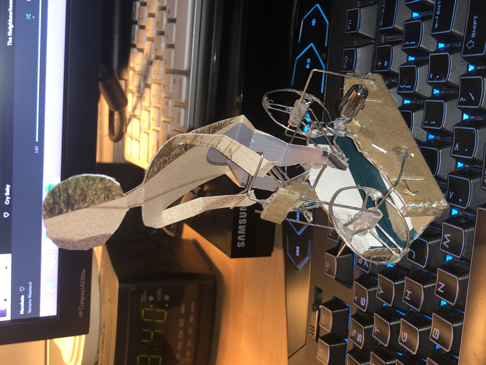

Katie's Kontraptions!
Here is a collection of my crafts and projects.
507 Mechanical Movements
#1: The transmission of power by simple pulleys and an open belt
#2: The transmission of power by simple pulleys and a crossed belt
Paper Mech Sculptures
Up and Down Crank

Flapping Wings

Rotating Pulleys with Crossed Belts

Other Stuff
Bicycle

Pedalboat
Crossbow #1
Crossbow #2
Nerf Gun
Rubberband Gun
Grappling Hook Gun
Skee Ball Machine